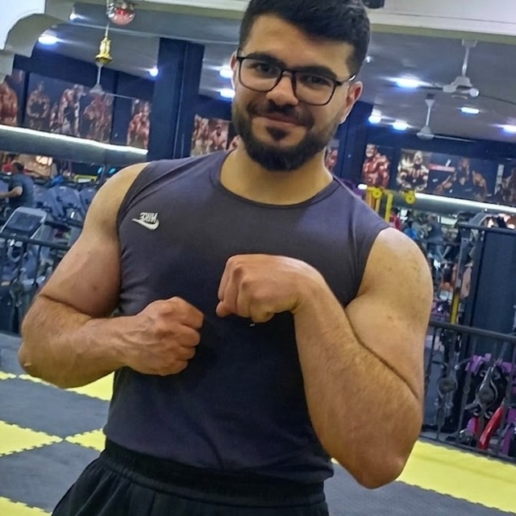

Beyond the Lab
When I’m not simulating materials, you’ll find me in the gym or immersed in music.

Bodybuilding
Discipline, consistency, and continuous improvement—principles that drive both my research and my training. Weightlifting and bodybuilding teach me resilience and the power of incremental progress, whether I’m chasing a new personal record or refining a DFT workflow.
Oud & Guitar
Music is my creative counterbalance. I play the oud—a traditional Arabic instrument with a deep, resonant soul—and the guitar, exploring everything from classical fingerstyle to modern ambient soundscapes. Both instruments help me unwind, sharpen my focus, and see patterns in a different light.